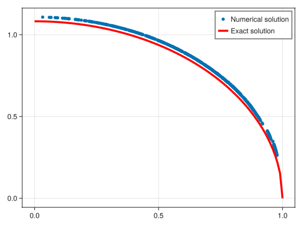
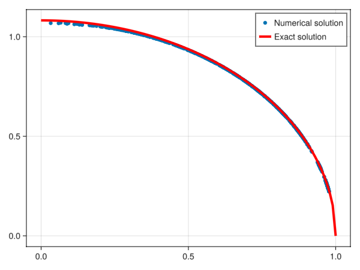
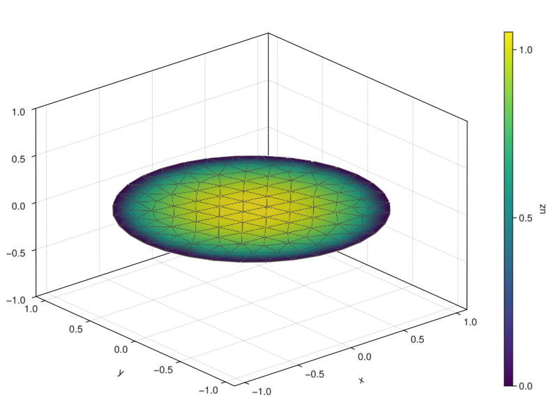

Elastic crack in 2D
- Solving a problem with an open surface (crack)
- Using the hypersingular operator
- Defining a custom kernel with a weight function
- Dealing with vector-valued problems
Problem definition
In this example, we solve a disk crack problem in the context of linear elasticity using boundary integral equations. The problem involves determining the displacement field $\boldsymbol{u}$ in an infinite elastic domain containing a disk-shaped crack. It is possible to show that the problem can be reduced to a boundary integral equation of the form:
\[T[\boldsymbol{u}] = -\boldsymbol{f},\]
where $T$ represents the integral operator associated with the hypersingular kernel, and $\boldsymbol{f}$ is the applied traction on the boundary. This example demonstrates the formulation, solution, and visualization of the problem, highlighting the use of integral operators.
Geometry and mesh
The domain is a disk of radius 1:
using Inti
using StaticArrays
using Gmsh
meshsize = 0.2
qorder = 2 # avoid 3 since it contains a negative weight
rx = ry = 1
gmsh.initialize(String[], false)
gmsh.option.setNumber("Mesh.MeshSizeMin", meshsize)
gmsh.option.setNumber("Mesh.MeshSizeMax", meshsize)
gmsh.model.occ.addDisk(0.0, 0.0, 0.0, rx, ry)
gmsh.model.occ.synchronize()
gmsh.model.mesh.generate(2)
gmsh.model.mesh.setOrder(1)
msh = Inti.import_mesh(; dim = 3)
Γ = Inti.Domain(e -> Inti.geometric_dimension(e) == 2, msh)
Γ_msh = msh[Γ]
Q = Inti.Quadrature(Γ_msh; qorder = 2)
gmsh.finalize()Info : Meshing 1D...
Info : Meshing curve 1 (Ellipse)
Info : Done meshing 1D (Wall 0.000129291s, CPU 0.000127s)
Info : Meshing 2D...
Info : Meshing surface 1 (Plane, Frontal-Delaunay)
Info : Done meshing 2D (Wall 0.00754509s, CPU 0.007545s)
Info : 123 nodes 245 elementsNote that we have used second-order elements for the mesh.
Integral operators
We will now build an approximation to $T$ using:
- A hierarchical matrix representation
- An adaptive correction to the singularity
using HMatrices
using LinearMaps
using LinearAlgebra
#Elastic properties
μ = 1; ν = 0.15;
E = 2*μ*(1+ν)
λ = ν*E / ((1+ν)*(1-2*ν))
op = Inti.Elastostatic(; λ, μ, dim = 3)
K = Inti.HyperSingularKernel(op)
Top = Inti.IntegralOperator(K, Q)
T₀ = Inti.assemble_hmatrix(Top)
δT = Inti.adaptive_correction(Top)636×636 SparseArrays.SparseMatrixCSC{StaticArraysCore.SMatrix{3, 3, Float64, 9}, Int64} with 29370 stored entries:
⎡⣿⣿⡷⡼⣇⣄⠀⠀⢽⣿⢸⢶⢧⠤⢐⡇⢛⣻⣏⡹⣿⢶⢶⣄⣋⣤⣄⣿⢛⠷⠴⡷⢂⢃⢾⣇⢿⣘⣃⣽⎤
⎢⣹⡯⡿⣯⣭⠇⠄⠀⠀⠲⣜⠻⣻⡶⠀⢀⣉⣋⢨⣄⣸⠺⠶⣯⣩⣽⣬⢭⣝⣿⣿⠇⠈⡱⣗⢯⣏⣍⢩⣄⎥
⎢⠉⢽⠧⠟⣿⣿⣦⡀⠁⠤⠓⣠⠭⢡⠠⢴⣯⣿⣿⣿⣵⠙⢠⡾⠉⡽⣷⡗⢪⠍⠍⡈⠸⠹⢯⣼⠍⡯⡼⣯⎥
⎢⠀⠀⠀⠉⠈⠹⣿⣿⣶⣄⡀⠀⠀⣼⣷⣾⣻⢹⣯⣿⣌⡄⣤⠁⠀⠀⠀⠀⠀⠀⠀⠀⠀⠀⢀⠀⠀⣁⠀⠀⎥
⎢⣿⣶⢠⡀⠁⡄⠙⣿⣿⣿⡆⠀⠀⣿⣿⣷⣾⣸⣭⣽⣿⢯⣿⡈⢡⠀⠀⠀⠀⠀⠀⠀⠀⢸⣼⣦⡷⠛⡁⣶⎥
⎢⢲⣖⣶⡙⠙⣤⠀⠈⠈⠉⠱⣦⠀⠀⠀⠉⠉⢵⡊⠍⢸⣯⡍⠈⠭⣞⣿⡟⢳⣾⣿⣾⡅⣬⢣⡮⣤⠡⡌⣗⎥
⎢⠩⡖⢻⡾⠇⣃⣠⣤⣤⣤⡄⠀⠻⣦⣄⣠⣀⣣⡀⣀⠠⣴⣬⡓⠑⠞⠞⠺⠛⠳⠷⠋⠙⠓⣷⡜⡿⠋⠻⠶⎥
⎢⠶⠤⠀⢀⠀⣠⣹⣿⣿⣿⡄⠀⠀⣽⡿⣯⣤⡼⢥⣬⢿⠀⠸⡀⠤⠀⠀⠀⠀⠀⠀⠀⠀⠸⠶⠶⠀⠀⠄⠦⎥
⎢⣿⣠⡧⢹⣷⣯⣛⣚⣂⣾⢇⣄⢤⡸⢀⡿⢿⣷⣾⣿⣺⡂⢀⣷⠶⡠⣤⣀⢰⢆⡄⠀⢰⢠⢥⣠⢄⢰⡦⣄⎥
⎢⣟⣙⠃⢶⣿⣿⣯⣯⣃⣻⡎⠌⠀⢨⣀⣷⣾⣿⣿⣿⣻⣶⡄⣟⣶⠀⠈⠉⠈⢀⠀⠡⠔⠴⢌⠱⣤⣶⢳⣏⎥
⎢⢻⣟⣶⣚⣕⡛⠊⢹⣽⣿⠦⣶⢀⣆⠙⠓⠺⠿⢿⡻⢿⣷⣾⣯⢵⣐⣐⣒⡂⢸⣰⣶⡮⣒⠞⣟⣾⡭⢯⡛⎥
⎢⠘⢷⡾⣦⣤⡶⠄⢘⡞⠻⡃⠩⢦⠿⠒⠣⢤⣴⢬⢍⡾⣿⢻⣶⣏⣠⠰⡂⠤⢄⣒⢝⣳⡻⡶⢳⣿⣾⣶⠖⎥
⎢⠋⣬⣇⣾⢇⡤⠀⠀⠑⠚⣣⢧⣱⠄⠀⠂⠉⠣⠘⠛⠑⢳⠋⣹⢻⣶⣤⣶⣠⣠⡍⡘⠻⢳⡡⣨⡻⡝⢭⡤⎥
⎢⣤⣥⡄⣞⢑⠿⠀⠀⠀⠀⣿⠿⣺⡁⠀⠀⠀⢻⡆⠀⢀⢸⠀⠢⢠⣿⣿⣿⣷⡊⠃⡆⠠⢸⣺⢾⢬⡆⢿⣿⎥
⎢⢾⡔⣷⣽⡎⠖⠀⠀⠀⠀⣹⣶⢿⡀⠀⠀⠀⢖⠂⠀⢈⣈⡀⢇⠂⣺⡹⠻⠿⣧⣦⣆⡀⠟⢷⡞⣆⣱⢎⣑⎥
⎢⢰⡧⠿⠟⡃⠥⠀⠀⠀⠀⣻⣿⡽⠃⠀⠀⠀⠉⠄⡀⢰⣾⣎⢝⣃⠡⠩⠤⠨⢿⣿⣿⣇⣬⡫⢏⣼⣛⣝⠩⎥
⎢⠬⢰⢆⣢⣖⡂⠀⠀⣀⣀⡁⣭⢷⣀⢀⡀⠐⣒⢒⡅⣊⣫⣽⡚⢿⣂⣀⣂⣤⠌⡉⣽⡿⣯⣃⢰⣿⡾⣺⡀⎥
⎢⠾⢶⡽⣝⢋⣷⡀⠠⠿⣿⡩⡶⣓⠿⢸⡇⠁⣳⢆⡑⣿⢥⢼⡛⠃⣪⣺⣞⣹⠷⡯⢌⢁⣘⣻⢞⣓⡛⣟⡷⎥
⎢⣒⠷⡏⢽⡷⠇⠄⠠⡽⠉⠀⡛⡿⠋⠈⠁⢠⠑⢠⣿⡾⡿⣓⣷⣿⠆⠦⠷⣌⣱⣶⢛⣻⣿⣿⠹⣿⣿⣿⠶⎥
⎣⣉⣼⠃⢶⡶⣯⠀⠀⠁⠭⢆⢭⢻⡆⠨⡅⠈⢭⡹⢤⣯⠳⢸⠟⠃⡵⣿⣷⢎⢰⠗⡙⠚⠻⢯⡽⢻⠟⡿⣯⎦Boundary conditions
We consider a constant normal loading on the crack surface.
f = 1.0
t = -[SVector(0,0,f) for _ in Q]636-element Vector{StaticArraysCore.SVector{3, Float64}}:
[-0.0, -0.0, -1.0]
[-0.0, -0.0, -1.0]
[-0.0, -0.0, -1.0]
[-0.0, -0.0, -1.0]
[-0.0, -0.0, -1.0]
[-0.0, -0.0, -1.0]
[-0.0, -0.0, -1.0]
[-0.0, -0.0, -1.0]
[-0.0, -0.0, -1.0]
[-0.0, -0.0, -1.0]
⋮
[-0.0, -0.0, -1.0]
[-0.0, -0.0, -1.0]
[-0.0, -0.0, -1.0]
[-0.0, -0.0, -1.0]
[-0.0, -0.0, -1.0]
[-0.0, -0.0, -1.0]
[-0.0, -0.0, -1.0]
[-0.0, -0.0, -1.0]
[-0.0, -0.0, -1.0]Solution
The exact solution is known for this problem:
σ = 1
uz(r) = 4*(1-ν)*σ / (π*μ) * sqrt(1-r^2)
uexact(x) = SVector(0, 0, uz(norm(x)))uexact (generic function with 1 method)To compute the approximate solution, we will need to solve the linear system:
\[T[\boldsymbol{u}] = \boldsymbol{f},\]
where $\boldsymbol{u}$ is the unknown vector of displacements. One difficulty that arises is related to the fact that in our implementation, both u and f are represented as Vectors of SVectors. While convenient for some operations, this can lead to difficulties when trying to solve the linear system since most linear algebra libraries expect matrices of a scalar field (usually either $\mathbb{R}$ or $\mathbb{C}$). To address this, we will write a short function solve that will convert between the vector of vectors and the vector of scalars.
using IterativeSolvers
function solve!(u, T₀, δT, t)
L_ = LinearMap{Float64}(3 * size(T₀, 1)) do y, x
σ = reinterpret(SVector{3,Float64}, x)
μ = reinterpret(SVector{3,Float64}, y)
mul!(μ, T₀, σ)
mul!(μ, δT, σ, 1, 1)
return y
end
u_ = reinterpret(Float64, u)
t_ = reinterpret(Float64, t)
u_, gmres_hist = gmres!(u_, L_, t_, restart = 1000, maxiter = 1000, log=true)
@show gmres_hist
return u
end
solve(T₀, δT, t) = solve!(zero(t), T₀, δT, t)solve (generic function with 1 method)We can now easily call solve to obtain our approximate solution:
u = solve(T₀, δT, t)gmres_hist = Converged after 28 iterations.Visualization
using LinearAlgebra
using GLMakie
rr = []
uu = []
for i in eachindex(Q)
push!(rr, norm(Inti.coords(Q[i])))
push!(uu, u[i][3])
end
scatter(rr, uu, label = "Numerical solution")
lines!(0:0.01:1, uz, label = "Exact solution", color = :red, linewidth = 4)
axislegend()
current_figure()
Improving the accuracy
It is beneficial to add a weight function:
weight(x) = sqrt(1 - norm(x))
Kw = let w = weight, K = K
(p,q) -> K(p,q) * w(q.coords)
end
Inti.singularity_order(::typeof(Kw)) = -3
Tw_op = Inti.IntegralOperator(Kw, Q)
Tw₀ = Inti.assemble_hmatrix(Tw_op)
δTw = Inti.adaptive_correction(Tw_op; maxdist = 2*meshsize, atol = 1e-2)
uw = solve(Tw₀, δTw, t)
u = uw .* [weight(q.coords) for q in Q]636-element Vector{StaticArraysCore.SVector{3, Float64}}:
[0.0, 0.0, 0.7199059038020164]
[0.0, 0.0, 0.803277635892229]
[0.0, 0.0, 0.8255998870647842]
[0.0, 0.0, 0.8486400191106476]
[0.0, 0.0, 0.7531046333934299]
[0.0, 0.0, 0.8472407490735542]
[0.0, 0.0, 0.7582810584142963]
[0.0, 0.0, 0.6692421000121331]
[0.0, 0.0, 0.6356471509358388]
[0.0, 0.0, 0.7387147133323446]
⋮
[0.0, 0.0, 0.6076563651494007]
[0.0, 0.0, 0.6100281841361813]
[0.0, 0.0, 0.6973750296818976]
[0.0, 0.0, 0.6148315296771772]
[0.0, 0.0, 0.5986046044206638]
[0.0, 0.0, 0.6917055638685878]
[0.0, 0.0, 0.6010743714809373]
[0.0, 0.0, 0.6277242230728918]
[0.0, 0.0, 0.6902730074142083]Check that it is indeed better:
using LinearAlgebra
using GLMakie
rr = []
uu = []
for i in eachindex(Q)
x = Inti.coords(Q[i])
push!(rr, norm(x))
push!(uu, u[i][3])
end
scatter(rr, uu, label = "Numerical solution")
lines!(0:0.01:1, uz, label = "Exact solution", color = :red, linewidth = 4)
axislegend()
current_figure()
Plotting on the mesh
using Meshes
u3w_nodes = Inti.quadrature_to_node_vals(Q, [u[3] for u in uw])
msh_nodes = Inti.nodes(Q.mesh)
w_nodes = [weight(x) for x in msh_nodes]
u3_nodes = u3w_nodes .* w_nodes
colorrange = extrema(u3_nodes)
fig = Figure(; size = (800, 600))
ax = Axis3(fig[1, 1])
n = length(Q.mesh.nodes)
viz!(Q.mesh; color = u3_nodes, interpolate = false, showsegments=true)
cb = Colorbar(fig[1, 2]; label = "uz", colorrange)
fig